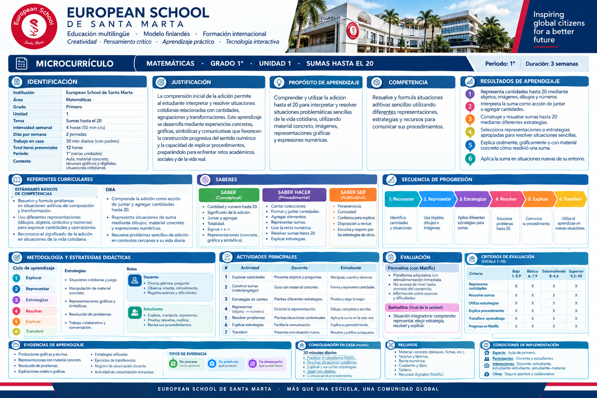
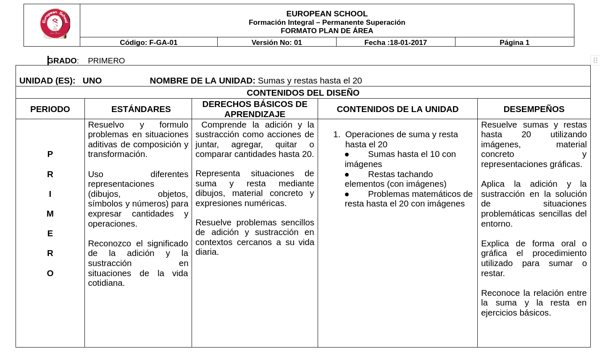

Una exploración guiada para mirar más allá del documento y reconocer cómo se vive el aprendizaje en el aula. Analizamos el microcurrículo de Matemáticas · Grado 1° · Unidad 1 · Sumas hasta el 20 del European School de Santa Marta, bajo el modelo de evaluación iluminativa de Parlett y Hamilton.
Me identifico e informo de la manipulación y autorreproducción de cada audio: cada pista pertenece a una sección de este recorrido y se detiene al pasar a la siguiente.
Es el nivel estructural más definido y concreto del diseño curricular. Cuando el currículo se trabaja por núcleos problemáticos, al microcurrículo le corresponden los problemas específicos que conforman un núcleo o subnúcleo, condensando los contenidos esenciales en componentes integradores con carácter indagador. Toca cada tarjeta para ver definición, referencia y ejemplo.
El microcurrículo es el plan o guía de la actividad escolar: el nivel de concreción más específico y operativo del diseño curricular, desarrollado directamente en el aula por el docente.
Taba (1962), Curriculum DevelopmentLos problemas específicos del microcurrículo surgen de condensar los contenidos esenciales en componentes integradores con carácter indagador, dentro de la estructura curricular intermedia.
De Zubiría (2006); MEN (1998, Lineamientos Curriculares)Programas de clase, plan de aula y actividades de docencia que generan ambientes para el aprendizaje: educatividad, enseñabilidad, educabilidad y aprendibilidad.
Flórez Ocampo (1999), La pedagogía como saberObserva las definiciones con sus referencias: cada tarjeta lleva definición, cita y ejemplo.

Del documento a la práctica. Explora el formato del microcurrículo del European School de Santa Marta sección por sección: cada pestaña contiene la información específica del documento y cómo se leyó en el análisis. Las imágenes del material original también son evidencia.
Las horas, el grado y el periodo resultan realistas para la cantidad de contenido propuesto: un solo eje (adición hasta 20) en 12 horas presenciales más trabajo diario en casa.
"La comprensión inicial de la adición permite al estudiante interpretar y resolver situaciones cotidianas relacionadas con cantidades, agrupaciones y transformaciones… preparándolo para enfrentar retos académicos, sociales y de la vida real."
Comprender y utilizar la adición hasta el 20 para interpretar y resolver situaciones problemáticas sencillas de la vida cotidiana, utilizando material concreto, imágenes, representaciones gráficas y expresiones numéricas.
Resuelve y formula situaciones aditivas sencillas utilizando diferentes representaciones, estrategias y recursos para comunicar sus procedimientos.
Los resultados están redactados con verbos en acción (representar, interpretar, construir, seleccionar, explicar, aplicar) observables y graduados según la taxonomía de Bloom. Se articulan con los estándares y DBA del Ministerio de Educación.
Los saberes están correctamente divididos en conceptual, procedimental y actitudinal, y avanzan de lo simple a lo complejo: condición que el análisis constructivista valora como progresión interna de esquemas.
Explorar → Representar → Estrategiar → Resolver → Explicar → Transferir
Predomina el aprendizaje activo: juego, manipulación, colaboración y resolución de problemas. No se limita a la cátedra tradicional; cada actividad tiene rol docente y rol estudiante explícitos.
Plataforma adaptativa Matifis (Matific): retroalimentación inmediata, no avanza de nivel hasta dominar el contenido, información sobre avances y dificultades.
Situación integradora: comprender, representar, elegir estrategia, resolver y explicar.
| Criterio | Bajo 1–5.8 | Básico 6–7.9 | Sobresaliente 8–9.4 | Superior 9.5–10 |
|---|---|---|---|---|
| Representa cantidades | Nivel alcanzado según desempeño en la evidencia correspondiente | |||
| Resuelve sumas · Utiliza estrategias · Explica procedimiento · Transfiere aprendizaje · Progreso en Matifis | Misma escala de dominio progresivo por criterio | |||
Producciones gráficas y escritas · representaciones con material concreto · resolución de problemas · explicaciones orales o gráficas · estrategias utilizadas · ejercicios de transferencia · registro de observación durante la clase · actividad de consolidación extraclase. Tipos: de proceso, de producto y de desempeño.
Espacio: aula de primero · Participantes: docente y estudiantes · Interacciones: docente–estudiante, estudiante–estudiante, estudiante–material · Clima: seguro, propositivo y colaborativo.
La evaluación es formativa y sumativa, con criterios e instrumentos claros (rúbrica por escala, plataforma adaptativa, observación) más allá de un examen escrito final.
Grado Primero · Unidad Uno · "Sumas y restas hasta el 20": periodos, estándares, DBA, contenidos (sumas hasta el 10 con imágenes; restas tachando elementos; problemas matemáticos con imágenes) y desempeños.

Abrir el plan de área en tamaño completo ↗Organiza identificación, justificación, propósito, competencias, resultados, saberes, secuencia, metodología, actividades y evaluación.
Abrir el panel del microcurrículo en tamaño completo ↗¿Qué información de la planeación ayuda a comprobar que existe conexión entre lo esperado y lo que el estudiante hará? Escribe una observación breve (opcional):
Para fundamentar el análisis se combinan dos miradas: la evaluación iluminativa (Parlett y Hamilton) como modelo principal, y el constructivismo como marco del diseño didáctico. Se complementa con los subtipos de evaluación de Stufflebeam (1987). Selecciona cada lente y recorre el mapa de lo general a lo particular.
Tiene un enfoque cualitativo y humanista. No se fija tanto en las calificaciones, sino en cómo viven la asignatura los profesores y los estudiantes. Utiliza la observación y las entrevistas para descubrir los problemas ocultos del microcurrículo: por ejemplo, si la carga de tareas es excesiva o si los temas generan frustración. Analiza el programa como un sistema abierto en su contexto real de ejecución.
¿Qué información se perdería si solo revisáramos resultados finales y no observáramos cómo se desarrolla la experiencia? Se perdería la vivencia: frustraciones, ritmos, la forma en que niños de 6 años interpretan la propuesta.
Los modelos de evaluación de microcurrículo vinculados al constructivismo se caracterizan por validar el diseño de una enseñanza que prioriza el aprendizaje activo, la autonomía del estudiante y la progresión interna de sus esquemas mentales (Piaget; Vygotsky; Ausubel, 1968). Evaluar un microcurrículo no implica medir si los contenidos están listos para memorizar, sino verificar si la estructura didáctica propicia la construcción de significados funcionales.
El documento parte del modelo constructivista e integra lo teórico con lo práctico: manipulación de material concreto antes del símbolo, secuencia explorar→transferir, trabajo colaborativo y conversación como zona de desarrollo próximo (Vygotsky, 1978).
El proceso de evaluación de un currículo va desde su creación y diseño hasta la aplicación del proyecto en el que se encuentran, con subtipos de evaluación: de contexto, de insumos, de procesos y del producto, lo cual conlleva a tomar cuatro tipos de decisiones: de planificación, estructurales, de implantación y de retrocomunicación.
Seis preguntas gobiernan la revisión. Abre cada dimensión y encuentra, además de la pregunta, la respuesta específica del análisis para este microcurrículo. No se trata de marcar casillas mecánicamente, sino de buscar coherencia entre las partes.
12 horas presenciales + 30 min diarios en casa, 3 semanas, un solo eje conceptual (adición hasta 20).
La justificación conecta la adición con situaciones cotidianas de cantidades, agrupaciones y transformaciones, y con "retos académicos, sociales y de la vida real".
Seis resultados con verbos en acción (representar, interpretar, construir, seleccionar, explicar, aplicar), articulados con Estándares (MEN, 2003) y DBA (MEN, 2016) sobre situaciones aditivas hasta 20.
Secuencia Resumir→Representar→Estrategiar→Resolver→Explicar→Discutir, con saberes conceptuales (número hasta 20, juntar/agregar), procedimentales (contar, recta numérica, estrategias) y actitudinales (perseverancia, respeto por estrategias de otros).
Ciclo de 6 fases, juego, material concreto, resolución de problemas, trabajo colaborativo, roles explícitos docente/estudiante y tecnología interactiva (tableros inteligentes, Matifis).
Formativa continua en Matifis con retroalimentación inmediata; sumativa con situación integradora; rúbrica por criterios en escala 1–10 (bajo, básico, sobresaliente, superior) y ocho tipos de evidencia (proceso, producto, desempeño).
Tres preguntas. Solo una opción es correcta en cada una; la retroalimentación distingue aciertos y errores.
1. ¿Qué modelo orienta este análisis del microcurrículo?
2. En la secuencia de progresión, ¿qué ocurre antes de "Resolver"?
3. Según el análisis, ¿qué aporta la plataforma Matifis a la evaluación?
Siete características describen la propuesta analizada. Cada una se observa en el material y se sustenta con autores de referencia. Enfoque pedagógico del documento: constructivista (Piaget; Vygotsky, 1978; Ausubel, 1968), con integración de tecnología y juego.
El objetivo es resolver situaciones aditivas hasta 20; las actividades son de juntar, representar y resolver sumas; y la evaluación mide exactamente eso: representa cantidades, resuelve sumas, explica procedimiento.
Referencia: la coherencia curriculum-alignment se verifica en Tyler (1949): objetivos, experiencias de aprendizaje y evaluación deben corresponder.
| Componente | Evidencia en el documento |
|---|---|
| Objetivo | Resolver situaciones aditivas sencillas hasta 20 |
| Actividad | Construir sumas con material concreto; resolver problemas de contexto |
| Evaluación | Criterio "Resuelve sumas" y situación integradora final |
Responde a las necesidades de niños de 6 años: material concreto, juego, 50 minutos por sesión. Utiliza los recursos disponibles del colegio (tableros, bloques, fichas, plataforma) y se articula con el modelo institucional del European School: educación multilingüe, modelo finlandés, formación internacional.
Referencia: Stufflebeam (1987): la evaluación de contexto define si los objetivos responden a las necesidades reales de los destinatarios.
El ciclo en 6 fases permite ritmos diferentes y la plataforma adaptativa no avanza hasta dominar el contenido. Se recomienda que el documento contemple adaptaciones curriculares (PIAR) para estudiantes con NEE.
Referencia: Booth y Ainscow (2011), Index for Inclusion; Decreto 1421 de 2017 (Colombia): PIAR para estudiantes con discapacidad.
El estudiante explora, manipula, representa, prueba, resuelve, explica y revisa: el docente dirige, pero el protagonismo es del niño en cada fase del ciclo.
Referencia: learning by doing de Dewey (1938); participación como dimensión de inclusión (Booth y Ainscow, 2011).
Parte del modelo constructivista: del material concreto (bloques, fichas) a la representación gráfica y al símbolo (+, =, expresión numérica), integrando la comprensión conceptual con experiencias de aplicación en situaciones cotidianas.
Referencia: Bruner (1966): representación enactiva → icónica → simbólica; Vygotsky (1978): construcción social del conocimiento.
El estudiante aborda situaciones desde ángulos interdisciplinarios sin desintegrar el conocimiento: la unidad cruza matemáticas con lengua (explicar procedimientos), inglés (se dicta en ese idioma) y tecnología (Matifis, tableros interactivos), con evidencia de aprendizaje basado en proyectos y retos.
Referencia: Beane (1997), Curriculum integration: el conocimiento se organiza alrededor de problemas reales, no de asignaturas aisladas.
El por qué, el cómo y el para qué exigen autoevaluación y acción correctiva: el niño revisa sus procedimientos, escucha otras estrategias y la plataforma le exige dominio antes de avanzar. Es efecto del enfoque cognitivo del aprendizaje: parte de vivencias y preconceptos, y permite la construcción mental del conocimiento, relacionándose con participación y autodirección.
Referencia: Ausubel (1968), aprendizaje significativo; Flavell (1979), metacognición.
Estas cuatro fortalezas aparecen explícitamente en el material analizado. Explóralas para distinguir qué se observa y qué valor pedagógico se reconoce.
Inclusión de enfoque tecnológico con tableros inteligentes interactivos.
La experiencia se desarrolla en inglés: promueve la interculturalidad.
Enfoque en desarrollo de manualidades: el colegio brinda toda la disponibilidad de materiales.
Retos que estimulan el desarrollo de actividades a partir del conocimiento brindado.
El material señala tres oportunidades concretas. No son problemas inventados para la actividad: son líneas de mejora derivadas del análisis presentado. Cada tarjeta incluye la tabla de análisis con su imagen asociada.
Hallazgo: se propone incorporar más escenarios físicos vinculados al aprendizaje de los números hasta el 20.
Propósito: fortalecer la relación entre aprendizaje matemático y desarrollo motor mediante experiencias corporales y espaciales.
| Dato | Detalle |
|---|---|
| Evidencia actual | Manualidades y material concreto en aula |
| Línea de mejora | Recorridos, estaciones y juegos corporales de conteo |
| Validar con | Tiempo, materiales, seguridad, inclusión |
Hallazgo: se plantea mayor participación de padres y familias en la comunidad educativa.
Propósito: apoyar la integración y consolidación de los aprendizajes; a esa edad es importante que los referentes de los niños los acompañen en las etapas del proceso.
| Dato | Detalle |
|---|---|
| Evidencia actual | 30 min diarios de trabajo en casa con padres |
| Línea de mejora | Comunidad activa: talleres y retos familiares |
| Validar con | Claridad de instrucciones y participación voluntaria |
Hallazgo: se sugieren espacios profesionales o de muestra para reconocer el valor de lo construido.
Propósito: aumentar la visibilidad e impacto de los proyectos mediante emprendimiento, redes sociales y grupos de marketing escolares o familiares.
| Dato | Detalle |
|---|---|
| Evidencia actual | Producciones gráficas y escritas como evidencia |
| Línea de mejora | Muestras de proyectos con propósito |
| Validar con | Privacidad, accesibilidad y retroalimentación |
Ahora participa tú: ¿cuál priorizarías y por qué?
Aquí comienza una fase diferente: las oportunidades anteriores son resultados del análisis; las estrategias de esta pantalla son propuestas de exploración que deberían validarse en contexto. Elige la oportunidad y observa la simulación de la solución sugerida.
Estaciones matemáticas activas
Diseñar estaciones cortas con objetos, tarjetas numéricas, recorridos y retos de conteo; observar qué apoyos facilitan la participación.
Para validar: tiempo disponible, materiales, seguridad, inclusión y evidencia de aprendizaje.
Retos familiares de sumas
Proponer una situación corta de suma para resolver en casa y compartir cómo se resolvió, evitando trasladar la responsabilidad de enseñanza exclusivamente a las familias.
Para validar: claridad de instrucciones, acceso a materiales y participación voluntaria.
Muestra de proyectos con propósito
Organizar una instancia breve en la que los estudiantes expliquen qué crearon, qué aprendieron y cómo su trabajo puede servir a otros.
Para validar: protagonismo infantil, privacidad, accesibilidad y criterios claros de retroalimentación.
Toca las estaciones de la clase simulada para ver qué hace el estudiante y qué evidencia recogería el docente.
El análisis no termina al describir el microcurrículo: comienza a aportar cuando conecta la evidencia con decisiones justificadas.
Antes de terminar, completa esta frase:
"Una oportunidad que vale la pena explorar es… porque…"